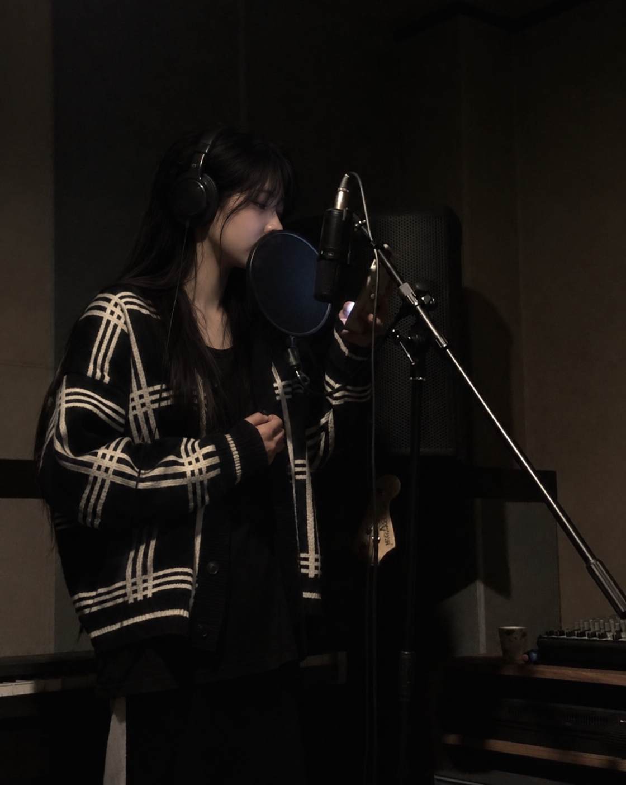

두 길로 함께 들려서
더 낮고 풍성하게
느껴져요.
다른 사람이 듣는
내 목소리는
이쪽이에요.
개념도 · 노래할 때 내 귀에는 공기와 머리뼈, 두 길로 소리가 들어와요.
녹음에는 공기로 전달된 소리만 담겨요.
녹음된 목소리가 어색한 건
처음 듣는 소리이기 때문이에요.
자주 들을수록 익숙해지고,
익숙해지면 들리는 것이 달라져요.
어디가 좋은지, 어디를 다듬을지.
목소리는 사람마다 달라서,
좋아지는 길도 사람마다 달라요.
ENOCH 보컬 레코딩 수업은 모든 과정이 1:1이라,
한 사람의 목소리에서 작은 차이까지 들어요.